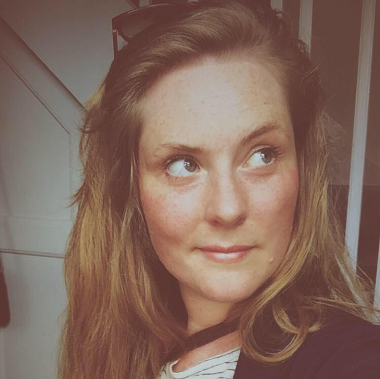

-

Nynne
-
Mathilde
-

Mia
-

Simone
-

Hans Christian
-

Cedric


Idé - R-Connect
Pain Point
I takt med at Republikkens medlemsskare vokser og bliver mere mangfoldig, opleves der strukturelle udfordringer omkring at skabe rammerne for kommunikation med henblik på netværksdannelse og socialisering internt i arbejdsfællesskabet, således at medlemmerne føler at de opnår maksimalt udbytte af det faglige potentiale, som Republikken rummer
Skitse

Storyboard

Usability test
Idé Grundlag
- Tilbyder:
- Oprettelse af bruger:
- Navn
- Studienummer/mail
- Alder
- Køn
- Kortoplysninger - linket til mobilepay
- Præferencer
- Oversigt over ugens menu
-
Loyalitetsprogram:
- Point system
- Efter loyalitet baseret på købshistorik
- Efter aktivitet i forbindelse med:
- Afstemninger
- Feedback på oplevelsen af det købte måltid
- Valuecards
-
Medbestemmelse fra brugergruppen
- De studerendes maddag
- Ugentlig afstemning om kommende uges menu
- Early bird tilbud til dem, som bestiller inden kl. X eller de 10/20 første
-
Pushmeddelelser:
- “Maden er klar”
- “Godmorgen - i dag serveres ….”
- “Er I ved at være sultne? Kom ned i kantinen og nyd …. med os”
- Oprettelse af bruger:
Brugssituationer:
- Når man har brug for sparring
- Når man mangler
Konceptvalidering
Hvem er målgruppen?
- Kvantificer størrelsen på målgruppen - kan den skaleres op?
Målgruppen er på nuværende tidspunkt Republikkens brugere. Selve applikationen er udviklet designmæssigt, så den henvender sig til Republikkens medlemmer som er ca. 150 personer. Ved at skalere app’en yderligere op, kan den udvikles til også at kunne benyttes af Republikkens tidligere medlemmer og dermed udvides målgruppen. Selve interfacet, kan i princippet bruges til andre kontorfællesskaber, der ønsker et sparringsforum for deres medlemmer.
Forstår målgruppen vores løsning?
- (gennem vores tests)
Da vi ikke kan teste direkte på vores tænkte målgruppe (Republikkens medlemmer) har vi været nødt til at teste på vores medstuderende, men med den fordel, at de også kender til Republikkens problematikker ift. at connecte folk.
(HER SKAL NOGET MERE TEKST IND OMKRING SELVE TESTEN AF APPEN PÅ TESTPERSON)
Hvilken værdi vil løsningen give virksomheden?
Via vores brugerundersøgelser, har vi fundet ud af, at Republikkens medlemmer efterspørger et forum, hvor de kan vidensspare mere med hinanden. Som det er lige nu, er det virksomhedens ansatte der connecter folk face-to-face.
Ved at lave en app der samler Republikkens medlemmer, skaber vi en værdi for virksomheden, ved at efterkomme deres medlemmers ønsker, samt give Republikken mulighed for at samle deres medlemmer, i et virksomhedspersonligt forum.
Hvilken værdi giver den målgruppen?
- Spørg dem eksempelvis “hvad ville du give for det”
Appen giver brugeren mulighed for at udvide deres netværk og styrke deres kompetencer via sparring med andre. Ved at skabe nye arbejdsmæssige relationer og ved at connecte med andre medlemmer af Republikken, vil denne app afhjælpe nogle af de problematikker som målgruppen har efterspurgt.
Kan udviklingen lade sig gøre? Eller er vi afhængige af teknologi, der ikke er moden endnu?
- Prøv at kvantificere (budget)
Applikationen kan sagtens lade sig gøre med den nuværende teknologi. Meget af den data der skal bruges, findes allerede på kundens hjemmeside og lægger sig også op af andre sociale platforme, i form af brugerprofiler, chatrum og kartoteker.
Inden for hvilken tidshorisont kan det realiseres?
Selve appen bør ikke tage lang tid at udvikle. Der vil skulle testes på mere relevant målgruppe i en beta-udgave før endelig udvikling. Det der kan tage længere tid er, at få Republikken medlemmer til at downloade, lære at bruge- og implementere app’en som et reelt værktøj i dagligdagen.
Har andre allerede realiseret en tilsvarende løsning?
En af vores testpersoner og dennes kontorfællesskab benytter sig af Podio.com - en samlet løsning til både web og mobil. Da vi desværre ikke har adgang til denne platform, har vi ikke kunne teste om hvorvidt den lægger sig helt op af vores applikation. Platforme som LinkedIn og Facebook har også delvist elementer som minder om vores app, men ikke på samme måde enkel og kun målrettet én specifik målgruppe som vores.
Valg af idé
Benchmark
| Målgruppens størrelse | Målgruppens skalerbarhed | Værdien for virksomheden | Værdien for målgruppen | Realiserbarhed | Konkurrence | Total | |||||||
| Vægtning | Score | Vægtning | Score | Vægtning | Score | Vægtning | Score | Vægtning | Score | Vægtning | Score | ||
| R-Connect | 0,5 | 1 | 0,4 | 2 | 0,8 | 2 | 1 | 3 | 0,7 | 3 | 0,6 | 2 | 9,2 |
Argumentation
R-connect
Pitch
Processen omkring at søge praktik kan være kilde til frustration og fortvivlelse for både vejledere og studerende. Den fornødne informationsindsamling er spredt udover flere forskellige platforme og processen er meget selvkørende for de studerende.
Derfor ønsker vi:
At skabe en samlet og skræddersyet løsning til praktiksøgning, som skal agere bindeled mellem studerende, virksomheder og vejledere.
KEA intern’s formål er at tilbyde et skræddersyet redskab, hvormed man kan sænke kompleksitetsniveauet omkring praktiksøgningsprocessen. Det gøres ved at give de studerende en platform, hvor de kan få overblik over og rådgivning til alle dele af praktiksøgnings-processen, få overblik over udbuddet og søge med få klik.
Hver enkelt studerende opretter sig og udfærdiger et personligt visitkort, der kort karakteriserer vedkommende med al formel information, der er påkrævet i en ansøgningsproces samt angiver deres interesser og kompetencer.
Det personlige visitkort fungerer således som den studerendes ansigt udadtil overfor potentielle praktik-virksomheder. Derudover fungerer den personlige profil, som et værktøj, der gør at den studerende nemt kan skabe sig overblik over sin ansøgningsproces;
Man kan uploade og administrere CV, motiverede ansøgninger, se information om kommende praktikperioder, tilknyttede vejledere og vejledningsmøder samt løbende holde sig opdateret på aktuelle praktikopslag, der matcher den studerendes personlige profil.
Derudover tilbyder KEA intern følgende undermenuer i sin interface:
- Opslagstavlen - et overblik over aktuelle praktikstillinger.
- Guides - en samling af relevante guides, som kan rådgive og hjælpe den studerende til at optimere sin praktiksøgnings-proces, samt
- Virksomhedsdatabasen - et komplet overblik over mulige praktikvirksomheder.
Udover at være en løsning, som søger at give KEA’s studerende værktøjerne til at blive mere selvhjulpne, effektive og skarpere i deres ansøgningsproces og branding af sig selv, er visionen som nævnt, at denne app skal agere bindeled mellem de tre involverede parter i praktiksøgnings-processen; studerende, vejleder og virksomhed.
Således vil alle tre parter kunne tilgå app’en og nemt med få klik indhente al relevant information og skabe sig overblik; Vejledere vil kunne danne sig overblik over den vifte af studerende, de skal være vejledere for, booke og administrere møder og følge den studerendes ansøgningsproces via den personlige profil.
Praktikvirksomheder vil kunne poste praktikopslag, som løbende matches med kvalificerede studerende, hvilket gør det muligt for virksomhederne proaktivt at finde den rette kandidat til deres praktikstilling.
Med KEA intern får KEA et unikt og skræddersyet værktøj til gavn for alle parter i praktiksøgnings-processen, som ikke alene smidiggør, effektiviserer og skaber overblik over processen fra start til slut, men også skaber rammerne for at det optimale praktikmatch opnås og at KEA bliver synonym med de stærkeste praktik-kandidater på markedet.
Moodboard

Styletile

Visuel identitet
Den visuelle identitet for KEA intern er udviklet med udgangspunkt i stilarten Flat Design, som er karakteriseret ved en todimensionel, minimalistisk stil med få og simple elementer, der med primært fokus på farve og typografi som virkemiddel, søger at maksimerer brugervenligheden i UI'en.
Valget af stilart har bl.a. sin begrundelse i sine klare fordele, når det kommer til at skabe en overskuelig og brugervenlig interface til mobilen. Her drages nytte af den minimalistiske æstetik, der aktivt hjælper brugeren med at identificere og navigere sin vej rundt i interfacen ved hjælp af de tydeligt definerede og simple menuer og ikoner.
Derudover harmonerer Flat Design godt med KEA's egen æstetik, som defineret i KEA's designmanual, hvor stilen er minimalistisk med fokus på en sprudlende farvepalette med tema-indelte monokrome farvepaletter, simple former og enkel, men effektfuld sans-serif typografi.
For at ramme KEA's æstetiske signalværdi tager valget af farvepalette og typografi sit udgangspunkt i KEA's designmanual. I stil med KEA's egen æstetik er farvepaletten derfor monokrom og udviklet med udgangspunkt i KEA's røde signaturfarve. For yderligere at understrege referencerne til KEA's æstetik er typografien Helvetica Neue Condensed Bold valgt.
Valget af grafiske former til logo, ikoner og knapper følger ligeledes linjen fra Flat Design, hvor fokus er holdt på ellipser og rundede rektangler for et stringent udtryk.
Designet af grafikken til logo og menu-ikonerne er udviklet med stor vægt på konventionel-signalværdi, således at grafikken er nem at afkode for brugeren. Der er bevidst udelukkende arbejdet med hvid outline og uden for meget detaljerigdom, for netop at understrege den minimalistiske æstetik.
Den grafiske opsætningen af interfacen har fokus på symmetri, balance og en klar fornemmelse af hierarki, som ligeledes skal guide brugerens forståelse og interaktion. I denne forbindelse er der både arbejdet med størrelses- og farvekontraster, som medvirker til at skabe hierarki og dybde. Derudover er placeringen af elementerne arrangeret med tanke på Loven om nærhed - der sikrer at nærliggende elementer opleves som samhørige, Loven om lukkethed - der fremhæver og definerer hovedmenu'en, samt Loven om lighed - der er brugt i udviklingen af de grafiske former, for at opnå et letgenkendeligt udtryk, for hver elements funktion. Udseendet på app'ens baggrund er udviklet efter rule-of-thirds, der giver det enkle udtryk et simpelt twist og understreger farvepaletten.
Usability test af KEA intern
Vi endte med ikke at bruge vores første test til noget, men vi har anden og Tredje test. Link til videoerne er indsat nedenfor:
Konklusionen på 3. test
Brugervenligheden kan klart forbedres. Vores test person nævnte specifikt at "nej" knappen med fordel kunne udskiftes med en "tilbage" knap, hvilket hun ville have lettere ved at forstå.